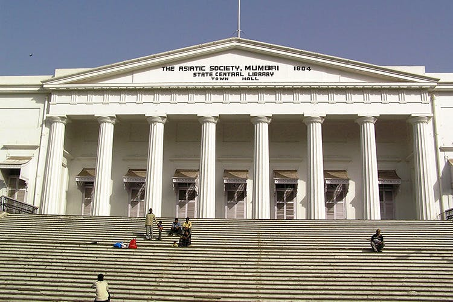
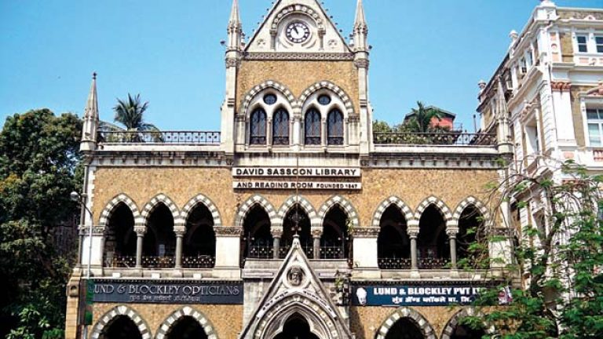
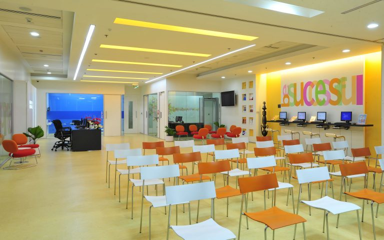
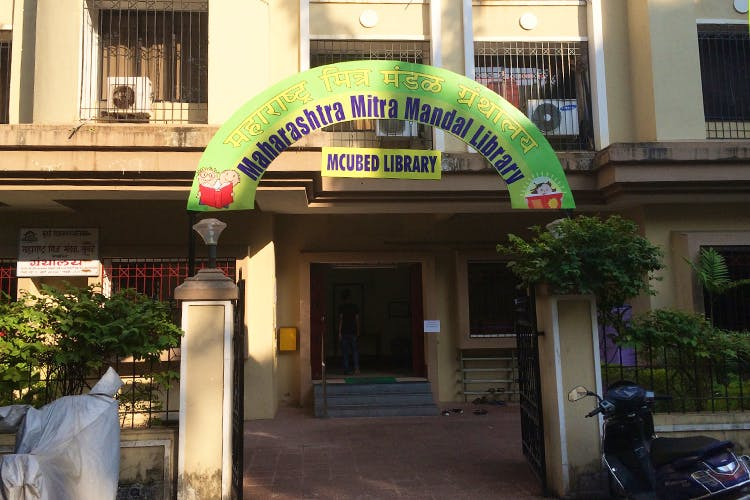
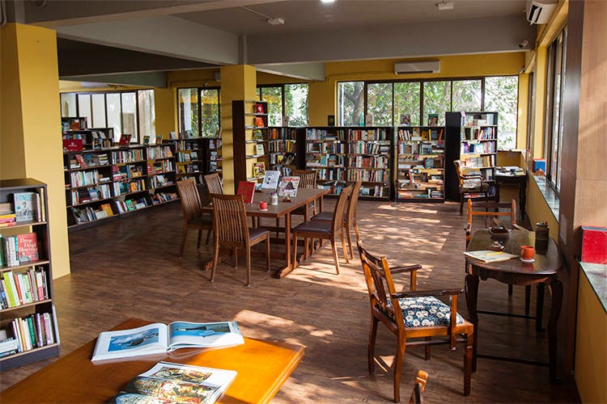
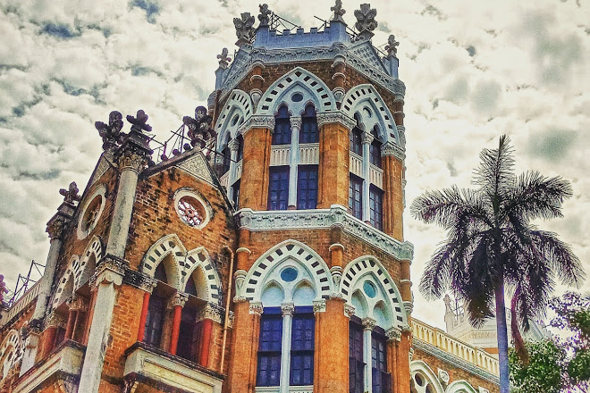
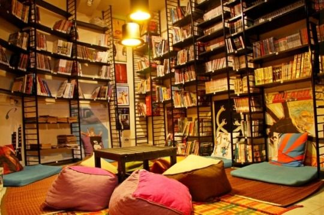
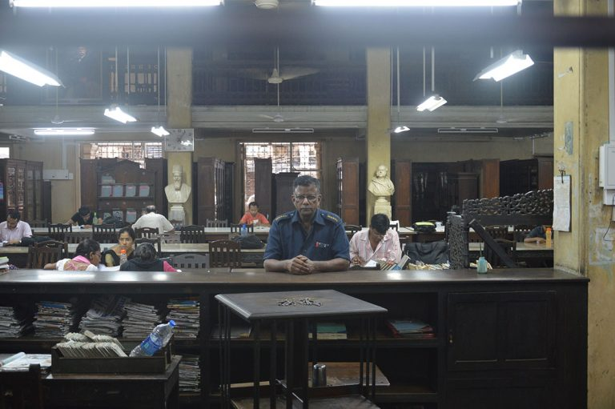
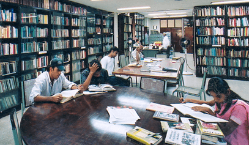
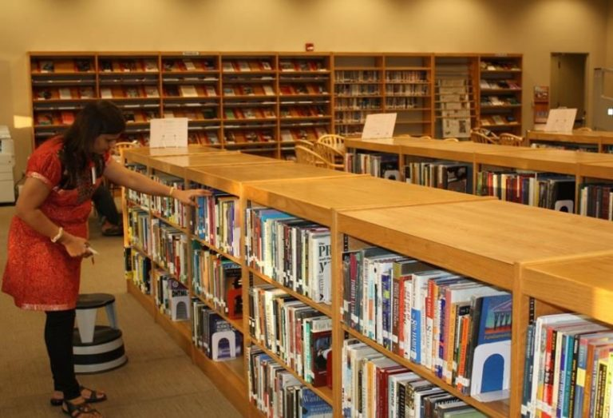

1. Asiatic Library
The Asiatic library is like a portal back into time. It is over 200 years old and has some of the rarest manuscripts in the country. You can also find many journals, magazines, articles, and newspapers that are more than a century old. You will be able to find these online as well, as they are being digitised for preservation. Two brilliant features of the library are the iconic staircase and Roman Colosseum-like columns that make the library a sight for sore eyes.
ADDRESS –
The Asiatic Library is located at Town Hall, Shahid Bhagat Singh Road Horniman Circle, near RBI,
Fort, Mumbai, Maharashtra 400023.
(Get Direction)
VISITING TIME –
The library is open from 10:30 AM to 6:45 PM.
2. David Sassoon Library
Located near Kala Ghoda, this 150-year -old library is home to more than 70,000 books on varied subjects. It also has books in rare regional languages that cannot be found anywhere else. The British era construction is beautiful to look at, and the atmosphere is always peaceful, making it a great place to plonk yourself down and study. Be sure to check out the balcony which provides a view of the garden nearby and Kala Ghoda. When the weather is pleasant, you can have a wonderful time on the balcony.
ADDRESS –
The David Sassoon Library is located at 152, Mahatma Gandhi Road, which is just off the David Sassoon Library Marg.
It is opposite Jehangir Art Gallery at Kala Ghoda, Fort, Mumbai. (Get Direction)
VISITING TIME –
The library is open 8:00 AM to 9:00 PM.
3. British Council Library
The British Council Library has some creative membership plans for all which encourages a lot of people to join.
This is one of the finest libraries, not just in Mumbai, but in the country. It has a wide range of fiction &
non-fiction books, newspapers, magazines. Here, you also get exclusive theatre and film recordings that you can
listen to in the library. This place is an ocean of history.
One of the biggest advantages of the British Council Library is that students can also find a lot of study material
that saves them the cost of buying expensive textbooks. This library is definitely a place all students should visit.
ADDRESS –
The British Council Library is at 901, 9th Floor of Tower 1 in One Indiabulls Centre.
This building is on 841, Senapati Bapat Marg on Elphinstone Road in Mumbai.
(Get Direction)
VISITING TIME –
The best time to visit the British Council Library is from 10:00 AM to 6:00 PM. The place is closed on Sundays.
4. Maharashtra Mitra Mandal Library
Also known as MCubed, Maharashtra Mitra Mandal is the place for Marathi literature. There are separate kids
sections and adults sections in the library. Beyond your reading experience, MCubed also organises discussion
sessions. Theres also a literary festival held each year where the atmosphere is exciting. Do check out the beautiful
reading rooms as well.
Considering this library is aimed at students, the membership fees are quite affordable. Near the reception, you can
also find second-hand books that anyone can buy for INR 20/-.
ADDRESS –
The Maharashtra Mitra Mandal Library is in Princess Building near Bandra Gymkhana on DMonte Park Road in Bandra
(West), Mumbai.
(Get Direction)
VISITING TIME –
You can visit Maharashtra Mitra Mandal from 10:00 AM to 8:00 PM.
5. Trilogy Library & Bookstor
The Trilogy Library & Bookstore is tucked away from the bustle of Lower Parel. It is like a quiet corner where you can
come to enjoy the peace and a good read. And for good reading, you have fiction & non-fiction books, books on photography
and art, and you can even find graphic novels and comic books (old & new). You can easily come here and get lost in the world of books.
Trilogy Library & Bookstore also holds workshops for the members and even a few books launches occasionally.
The atmosphere here is always great, and the owners of the library are also always there to help you.
ADDRESS –
Trilogy Library & Bookstore is in Building No. 28, just above the Mercedes Service Centre at Raghuvanshi Mills
Compound in Lower Parel, Mumbai.
(Get Direction)
VISITING TIME –
Throughout the week, the timings are 11:00 AM to 7:00 PM, and during weekends, the timings are 11:00 AM to 8:00 PM.
6. JN Petit Library
Any book you want, you are most likely to find it at the JN Petit Library. There are more than 1.5 lakhs books here,
and the library also ensures that the collection is updated regularly. They also have a dedicated room containing old
copies, journals, and manuscripts of a bygone era. The structure of the library is also quite beautiful, and many
times, people find themselves admiring the beauty of the library instead of reading books.
The membership fees here are quite affordable and students should definitely take the membership,
and enjoy access to the latest books.
ADDRESS –
The JN Petit Library is in JN Petit Institute, at 312, DN Road in Fort, Mumbai.
(Get Direction)
VISITING TIME –
You can visit the library during the weekdays from 9:00 AM to 6:30 PM and on Saturdays from 9:00 AM to 4:00 pm. Sundays the place is shut.
7. Leaping Windows
Leaping Windows is as modern as a library can get. Right above is a cafe that serves delicious food & beverages.
They also have a home delivery service where they deliver the book right to you, and even come to pick it up. Inside
the library, the walls and ceilings are adorned with murals of graphic novels and comic book characters. And along
with your usual fare of books, comics, and graphic novels, you also have access to manga.
Now, this is a place where one can really immerse themselves in pop culture.
Be sure to grab a sprawl mat and enjoy reading comfortably
ADDRESS –
The Leaping Windows library is at 3 Corner View, which is off Yari Road, opposite the Bianca Towers in Versova at
Andheri West, Mumbai.
(Get Direction)
VISITING TIME –
Open every day, you can visit Leaping Windows from 10:00 AM to 9:00 PM.
8. Peoples Free Reading & Library
Relive the British era writings at Peoples Free Reading & Library. This place has been around for more than a century
and has a legacy of having some of the finest literary works from the time the Britishers ruled India. Such is the
popularity of Peoples Free Reading & Library that it is always packed to the maximum. Theres also a separate room
just for the newspapers. This library is a wonderful place located in the bustling South Bombay area.
Students should definitely come here and consider getting a membership, as they have special subsidised rates just
for students.
ADDRESS –
Peoples Free Reading & Library is on J.S.S. Road opposite the Metro Inox Cinemas near Dhobitalao at Marine Lines,
Mumbai.
(Get Direction)
VISITING TIME –
From Monday to Saturday, the library is open from 9:00 AM to 7:00 PM, and on Sunday, it is open from 9:00 am to 1:00 PM.
9. NCPA Library
This is the place if you want to read up on culture. The NCPA library has many books on theatre, music, dance, and
art. They also have a lot of books on anthropology, and the Stuart Liff Collection, which has many writing in Western
classical music. At NCPA, you can listen to music pieces on various forms of music in India, and speeches by famous
people. There is a whole special room dedicated to that. The NCPA library is actually so much more than a library.
Owing to so many things on offer, the NCPA library is always packed with the curious minds of students.
Its membership is quite affordable and worth more than value.
ADDRESS –
The NCPA library is on NCPA Marg at Nariman Point, Mumbai
(Get Direction)
VISITING TIME –
NCPA is open only during the weekdays from 10:00 AM to 6:00 PM.
10. The American Library
Soak in the American culture at The American Library. Home to some of the best American literary works, this library
has more than 11,000 books on American art, business, science and academic writings, and periodicals. The library is
huge in size, which allows students to find comfortable spots and spend hours reading, without getting disturbed.
Oh, and if you dont want to read, you can also watch American classical films from their vast collection. The
membership fee of The American Library is quite affordable.
ADDRESS –
The American Library is at the American Consulate in Bandra-Kurla Complex, Mumbai.
(Get Direction)
VISITING TIME –
The American Library is closed on the weekends, but operates from 8:00 AM to 4:30 PM.
11. Jawaharlal Nehru Centre Library
The Nehru library offers a very unique experience. Unlike every other library, you may have ever visited, this one does not have all the books on display. You access these books by scanning their catalog and requesting for a book, which they then fetch it for you from their backend. They have more academic books, magazines, and newspapers. They even have every issue of National Geographic magazines since 1984! And the best part? There are no entry or membership fees!
ADDRESS –
Discovery of India Building, Nehru Centre, Dr. Annie Besant Road, Worli, Mumbai
(Get Direction)
VISITING TIME –
Mon-Sat: 10:00 am to 6:00 pm. Closed on Sunday